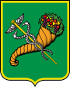

Місто України. Розташоване на північному сході України на Слобожанщині, науковий центр України, адміністративний центр Харківської області Друге за кількістю мешканців місто України з населенням 1 421 125 осіб. Площа міста — 350 км². Разом із прилеглими містами та районами утворює Харківську агломерацію з людністю понад 2 млн осіб. Місто-герой України (з 2022)

З 19 грудня 1919 по 24 червня 1934 рр. Харків був першою столицею Радянської України, звідси назва «перша столиця».
6 березня 2022 року Указом Президента України з метою відзначення подвигу, масового героїзму та стійкості громадян, виявлених у захисті своїх міст під час відсічі збройної агресії Російської Федерації проти України місту присвоєно почесну відзнаку «Місто-герой України».
Помірно континентальний клімат: зима холодна і сніжна, але мінлива, літо — спекотне. Середня температура року — +6,9 °C (у січні — 6,9, у липні +20,3). Середня кількість опадів за рік 513 мм, найбільша в червні й липні. У самому місті і в приміських околицях клімат м'якший, ніж на прилеглій північній території, і тому придатний для городництва і садівництва, включно з виноградарством.
Екологічний стан міста характеризується як стабільно напружений, хоча спад виробництва частково стримують наростання негативних процесів деградації навколишнього природного середовища. Найвагоміші чинники антропогенного навантаження на довкілля:
Найвищий пункт над рівнем моря 202 м (П'ятихатки (Харків)), найнижчий — 94 м (Новоселівка). З погляду рельєфу Харків поділяється на чотири низовинні й чотири підвищені райони. Стік річок творить улоговину, висунену з північного заходу на південний схід між Середньоруською височиною і Донецькою низовиною. Височини Харкова, переважно піщані, донедавна були вкриті сосновими і березовими лісами (Холодна гора, височина на північ від Лопані). Довжина Харкова: з півночі на південь — 24,3 км з заходу на схід — 25,2 км
Помірно континентальний клімат: зима холодна і сніжна, але мінлива, літо — спекотне. Середня температура року — +6,9 °C (у січні — 6,9, у липні +20,3). Середня кількість опадів за рік 513 мм, найбільша в червні й липні. У самому місті і в приміських околицях клімат м'якший, ніж на прилеглій північній території, і тому придатний для городництва і садівництва, включно з виноградарством.
На місці Харкова ще за часів Київської Русі знаходилося стародавнє місто Донець. Назва міста походить, ймовірно, від річки Харків. Інші версії — від засновника поселення хутора Харкова козака Харитона (Харька) Половецька версія — від половецького міста Шарукань (Харукань). З початку XVII століття землі сучасної Харківщини номінально належали Московській державі, але до 1650 року тут не було осілого населення. Московські царі розсилали сторожу й розвідувальні групи зі служивих людей, будували укріплення й оборонні лінії («білгородська», «ізюмська» та «українська») для стримування кримських татар і ногайців. Проте московитські «служиві люди» не були постійним населенням. Одночасно починається українська колонізація з сусідньої Гетьманщини.
У Харкові народилися або жили тривалий час поети Павло Тичина, Володимир Сосюра, Василь Еллан-Блакитний, Остап Вишня, Гнат Хоткевич, Велемир Хлєбников, Микола Асєєв, Сергій Єсенін, Анатолій Марієнгоф, Михайло Кульчицький, Борис Слуцький, Борис Чичибабін, Олександр Введенський, Василь Мисик, Вадим Левин, Ігор Муратов, Кость Гордієнко, Лариса Васильєва; прозаїки Григорій Квітка-Основ'яненко, Іван Багряний, Григорій Данилевський, Аркадій Аверченко, Іван Бунін, Юрій Олеша, Валентин Катаєв, Володимир Добровольський, Микола Сказбуш, Вадим Собко, Юрій Милославський, Михайло Єлізаров, Олександр Мільштейн та інші відомі письменники. З Харкова родом, там навчався та якийсь час працював всесвітньовідомий український мовознавець та видатний літературознавець Юрій Шевельов.